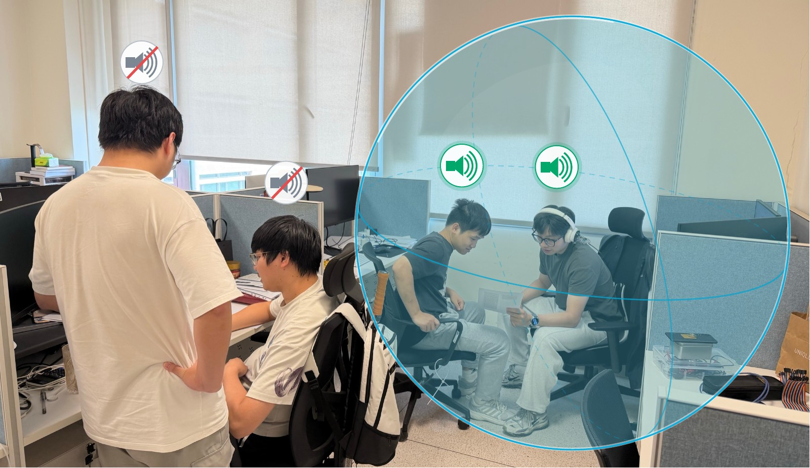

From 2 m to 1 m
The speakers stand at 1.75 m and 2.7 m. At a 2 m radius, the nearer speaker is inside. At a 1 m radius, both speakers are outside.
Keep nearby speech and suppress speech outside the selected region with an eight-microphone headset.
Radius-Conditioned TF-SkiMNet
Southern University of Science and Technology
Huawei Technologies

Eight input channels, one enhanced output, and a radius that can be changed during operation.
The speakers stand at 1.75 m and 2.7 m. At a 2 m radius, the nearer speaker is inside. At a 1 m radius, both speakers are outside.
The desired speaker stands at 0.75 m and the outside speaker at 2.7 m. The video alternates the mixture and enhanced playback.
The videos retain the presentation’s original audio and on-screen labels. The players provide separate mixture and enhanced tracks. These live recordings have no isolated reference, so reference-based quality scores are unavailable.
Speech is rendered through room responses and mixed with other speech or noise. The reference is the desired source signal used in evaluation.
Select Mixture, Enhanced, or Reference to compare signals at the same playback position. The spectrogram changes with the selected track. Only one player plays at a time.
These examples combine separately recorded speech sources. They are distinct from the live device videos above.
Mixture playback uses the reference microphone. All tracks within a comparison share one gain. Short excerpts also use matching edge fades. Spectrograms use a 20 ms sqrt-Hann window, a 10 ms hop, and a shared −80 to 0 dB color range, referenced to the largest STFT magnitude across the tracks.
Scores use the downloadable audio. SI-SDRi is output SI-SDR minus input SI-SDR. PESQ uses wideband mode, and eSTOI uses extended STOI. Target-only examples report output quality and target gain relative to the reference; no-target examples report input-to-output energy suppression. These clips are selected using their scores and do not represent dataset-wide results. Download per-example metrics (CSV).
The streaming prototype runs on the CPU with FP32 ONNX Runtime, two inference threads, and 16 kHz audio. Each step processes 10 ms of audio.
In a recorded 10-second live test, the prototype had no input or output drops. A separate six-second waveform test also verified numerical agreement with the PyTorch streaming implementation.
| Measure | Result |
|---|---|
| Median step time | 5.97 ms |
| 95th percentile | 6.18 ms |
| 99th percentile | 6.66 ms |
| Audio per step | 10 ms |
| Offline real-time factor | 0.62 |
The real-time factor is processing time divided by audio duration, measured on a separate 6-second input. The presentation reports an approximate 60 ms system delay. This system-level estimate includes more than the processing step and uses a different timing definition.
Corpus splits, mixture construction, network configurations, and training objectives used in the manuscript.
Experiment settings (PDF) · Configurations (JSON) · Corpus and scene lists (ZIP)
| Partition | LibriSpeech subsets | Speech files | Stereo WHAM files |
|---|---|---|---|
| Training | train-clean-100 + train-clean-360 | 132,553 | 20,000 |
| Validation | dev-clean | 2,703 | 5,000 |
| Test | test-clean | 2,620 | 3,000 |
Only two-channel WHAM files enter the noise pool. Mono speed-augmented files are excluded. Speech and noise use their corresponding training, validation, and test partitions.
COMSOL provides the headset acoustic responses, and the image method generates the room impulse responses (RIRs). Reverberant RIRs form mixtures; paired direct-path RIRs provide the target at microphone 0. Each earcup has a center microphone and three outer microphones on a 2.8 cm ring, spaced by 120°.
| Nominal radius | Training scenes | Validation scenes |
|---|---|---|
| 1 m | 6,667 | 667 |
| 1.5 m | 6,667 | 667 |
| 2 m | 6,666 | 666 |
Training and validation contain 20,000 and 2,000 disjoint scenes. Each split has 80% of scenes with nominal T60 from 0.3 to 0.8 s and 20% above 0.8 up to 1.2 s. The split uses seed 20260902 and ranks scenes by a seeded SHA-256 key within strata before applying quotas. Nominal radius identifies the scene pool; continuous queries are sampled separately. The downloadable lists give the assignments.
Two recording sessions contain five wearers each. For each wearer, the other four participants spoke from front, right, back, and left positions at 0.5 and 1.75 m, giving 160 selected recordings per session. TF-SkiMNet denoises the recordings to provide single-channel references. The first session supplies training speech; the second is held out for testing.
| Setting | Rule |
|---|---|
| Audio | 6 s at 16 kHz; eight input channels and one output at microphone 0. |
| Speech segments | Sample an integer duration uniformly from 2 s to the smaller of 6 s and the available utterance. Use shorter utterances in full. Crop starts and valid mixture offsets are random. |
| Simulated targets | Choose no target with probability 0.1 and one target otherwise. Add at most two outside speech interferers with distinct speakers. |
| Radius queries | Propose a radius uniformly from 0.8 to 2 m; accept only when the number of inside sources matches the chosen zero or one target. Accepted radii need not be uniform. |
| Target/interference level | When both are present, sample the target-to-total-interference power ratio uniformly from −5 to 10 dB. Use reverberant powers averaged over center microphones 0 and 4; noise is included in total interference. |
| Ear noise | Add stereo noise with probability 0.5 in simulation, directly to the corresponding earcup channels. It does not replace an outside speech source. |
| Microphone perturbations | Apply independent gains uniform from −2 to 2 dB and integer shifts chosen uniformly from −2, −1, 0, 1, and 2 samples. |
| Recorded mixtures | Use a 1 m query with targets at 0.5 m and interferers at 1.75 m. Training target-absence probability is 0.3. Exclude the first 10 s of each speech recording, draw 2–6 s segments, and place sources independently in the 6 s mixture. |
| Reference alignment | Raw speech and its denoised reference share crop indices, placement, and final scaling. Other raw speech recordings and ear noise supply interference. Recorded metrics compare outputs with denoised references. |
| Input normalization | Before the STFT, training and offline evaluation divide all channels and targets by one standard deviation over the entire multichannel mixture. |
Scroll sideways to see all model settings.
| ID | System | Blocks | Hidden channels | LSTM hidden units | Batch |
|---|---|---|---|---|---|
| M1 | Sound Bubble, full, discrete | 6 | 32 | 64 | 4 |
| M2 | Sound Bubble, small, discrete | 6 | 23 | 23 | 8 |
| M3 | RC-TF-SkiMNet backbone, discrete | 6 | 22 | 22 | 8 |
| M4 | Sound Bubble, small, continuous | 6 | 23 | 23 | 8 |
| M5 | RC-TF-SkiMNet backbone, continuous | 6 | 22 | 22 | 8 |
| M6 | RC-TF-SkiMNet, complete method | 6 | 22 | 22 | 8 |
All systems use a 320-point STFT, a 20 ms square-root Hann window, and a 10 ms hop. Discrete models use one-hot inputs at 1, 1.5, and 2 m. Small Sound Bubble baselines use six blocks with 23 hidden channels, 23 LSTM hidden units, and frequency compression by 3; the continuous variant adds a radius encoder with a 16-unit ReLU hidden layer. Baselines predict complex target components, while RC-TF-SkiMNet predicts a complex mask.
RC-TF-SkiMNet sums the outputs of four encoders with 22 hidden channels for RI, reference magnitude, ILD, and sine/cosine IPD. It adds the radius embedding before mapping 161 frequency bins to 84 bands: 30 low-frequency bins and 54 compressed bands. Its six blocks use frequency and causal time modeling; the subband time LSTM follows blocks 1–5 only. ILD uses base-10 log magnitude ratios, equal to the dB convention divided by 20; IPD uses sine and cosine components. The PDF lists each module, activation, residual connection, and normalization layer.
| Setting | Value or rule |
|---|---|
| Optimizer | Adam: initial learning rate 0.001, β1 = 0.9, β2 = 0.999, ε = 10−8, no weight decay, FP32, initial seed 7. Gradient norm is limited to 1. |
| Epoch sampling | 100,300 draws with replacement; simulation probability 0.8 and recorded-data probability 0.2. |
| Batch size | Eight, except four for the full baseline. There is no gradient accumulation, so the full baseline receives more optimizer updates per epoch. |
| Validation | 2,000 fixed simulated examples at 1, 1.5, and 2 m, one per validation RIR. Select the lowest model-specific validation loss. Paired-query and contrastive terms are excluded. |
| Learning rate | Reduce by a factor of 0.5 after 6 plateau epochs; absolute improvement threshold 0.002. |
| Stopping | Count non-improving epochs from epoch 60, with patience 20 and threshold 0.002. Stop only when the learning rate is at most one quarter of the initial value. Maximum 300 epochs. |
Every mixture receives main-query target supervision. Simulated mixtures also carry a candidate second radius, with the mixture waveform and source gains fixed. Equal target sets form positive pairs, including two silent targets; different sets form negative pairs. With at most one desired speaker per valid query, negative pairs switch between speech and silence.
| Component | Implementation |
|---|---|
| Candidate radius | Split [0.8, 2] m at source distances and retain intervals selecting at most one speaker. Request different target sets with probability 0.5, otherwise equal sets. Choose feasible intervals in proportion to length, sample uniformly inside the selected interval, and fall back to the other category if necessary. |
| Additional queries | From V valid simulated candidates, randomly choose P = max(1, round(0.25V)); rounding ties go to even. Use P = 0 if V = 0. The step processes B + P queries from B base mixtures with shared weights. Recorded mixtures have no second query. |
| Projection | Average final features over time and frequency; LayerNorm → Linear 22→64 → PReLU → Linear 64→64 → L2 normalization. |
| Contrastive loss | For cosine similarity c, use 1 − c for equal target sets and [max(0, c − 0.2)]² for different sets. Average within each category, then average the categories present. Weight: 0.02 × min(e/3, 1) at epoch e, starting at e = 1. |
| Base separation | Stabilized waveform SNR without scale projection, plus compressed RI and magnitude L1 errors. Spectral compression exponent is 0.3, normalized by summed compressed input magnitude at microphone 0. The waveform loss remains finite for a zero target; full equations and numerical constants are in the PDF. |
| Frame VAD | Pool final features over frequency and predict activity per frame with binary cross entropy, weighted by 0.1. Labels use target spectral power above the utterance peak minus 40 dB; silent targets have all-zero labels. VAD is executed at inference and does not gate the waveform. |
| Tail penalties | Separately average the largest ceil(0.25N) softplus shortfalls within target-present and target-absent groups. Thresholds are SI-SDRi 6 dB and suppression 15 dB, with temperature 1 dB and weight 0.05 each. Empty groups contribute zero. |
| Identity exclusion | Exclude a nonzero target from the SI-SDRi tail when the relative squared error between input and target is at most 10−12. Keep its base and VAD supervision. |
| Second-query supervision | Average separation plus 0.1 times VAD loss over second queries, with weight 0.25. Tail penalties apply only to main queries. The extra query and projection head are used only during training. |
| Baseline losses | Negative waveform SNR for nonzero targets; mean waveform L1 error weighted by 50 for absent targets. |
| Training controls | Add VAD, tail penalties, paired target supervision, and contrastive loss in sequence. The paired-only control retains the extra query and projection structure with contrastive weight zero. Feature controls remove ILD, IPD, or ERB; the simulation-only control preserves total draws and optimizer updates. |
| Test | Definition |
|---|---|
| Seven conditions per domain | Target only; no target; one interferer; noise; one interferer plus noise; two interferers; two interferers plus noise. Each condition has 100 six-second mixtures. All except no target include one desired speaker, and all speech interferers are outside the query. |
| Matched noise comparison | The two-interferer conditions share speech and geometry to isolate added noise. Standard simulated tests use 600 unique RIR scenes across 700 mixtures; recorded tests use a 1 m query. |
| Primary quality means | Pool one interferer, noise, one interferer plus noise, and two interferers: 400 mixtures per domain. Report SI-SDRi over microphone 0, wideband PESQ, and extended STOI. Target-only quality and the matched noise comparison are separate from this pool. |
| No-target suppression | Input-to-output energy attenuation, averaged over 100 no-target mixtures in each domain. |
| Low-score rates | Count SI-SDRi < 6 dB or suppression ≤ 15 dB. Report counts n/N with valid totals and invalid outputs separately. These thresholds follow the tail objective; they do not define perceptual failure. |
| Radius response | 100 additional single-source mixtures per domain. Keep each waveform fixed and query 1, 1.2, 1.4, 1.6, 1.8, and 2 m. Simulated sources lie from 0.5 to 2.5 m; recorded sources are at 1.75 m. Measure input-to-output attenuation against distance and query. |
| Network cost | ptflops 0.7.5 with the PyTorch backend and PyTorch 2.8.0 on CPU. Functional counting is disabled, and project LayerNorm subclasses use the native nn.LayerNorm counting rule. All models use batch size one and 1,000 frames of eight-channel, 16 kHz input, equivalent to 10 s at a 10 ms hop. Divide MACs by 10⁹ and by the input audio duration to obtain GMACs/s. Include fixed ERB and executed VAD operations; exclude STFT, inverse STFT, SiLU, and unsupported operations. |
| System | Params (M) | GMACs/s |
|---|---|---|
| M1 | 0.50 | 8.24 |
| M2 | 0.12 | 1.09 |
| M3 | 0.13 | 1.05 |
| M4 | 0.13 | 1.09 |
| M5 | 0.13 | 1.05 |
| M6 | 0.13 | 1.05 |
Params (M) includes fixed ERB weights and the VAD head when present, and excludes the training-only projection. The two ERB matrices contain 14,148 fixed coefficient entries. The configurations JSON keeps unrounded counts and separates total, trainable, and inference parameters. The current small baselines use six blocks and frequency compression by 3; their computation is about 3.70% above the continuous RC-TF-SkiMNet backbone, based on unrounded counts.
The file lists identify corpus files and RIR scenes assigned to each partition. Audio and RIR arrays are not included in these downloads.
Device videos and paired audio come from our hardware demonstration. Speech and ambient-noise sources for the simulated examples include LibriSpeech and WHAM!. Recorded-mixture examples use speech captured with our headset.
The model builds on TF-SkiMNet. The sound-bubble task follows Hearable devices with sound bubbles.